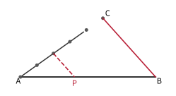

ホーム ＞ 数学A ＞ 作図・空間図形
線分 \(AB\) を \(2:3\) に内分する点 \(P\) の作図の手順を述べ、その作図が正しい理由を説明せよ。
\(A\) から任意の半直線を引いて等間隔に \(m+n\) 個の点をとり、最後の点と \(B\) を結ぶ。\(m\) 番目の点からそれと平行に線を引く。理由は平行線と線分の比の定理。
\(A\) から別の半直線を引き、等間隔に \(5\) 個の点をとる（\(A\to C\)）。

\(C\) と \(B\) を結び、\(A\) から数えて \(2\) 番目の点を通って \(CB\) に平行な直線を引く。
平行線と線分の比の定理より \(AP:PB=2:3\)。
【答案（テストに書く形）】
答